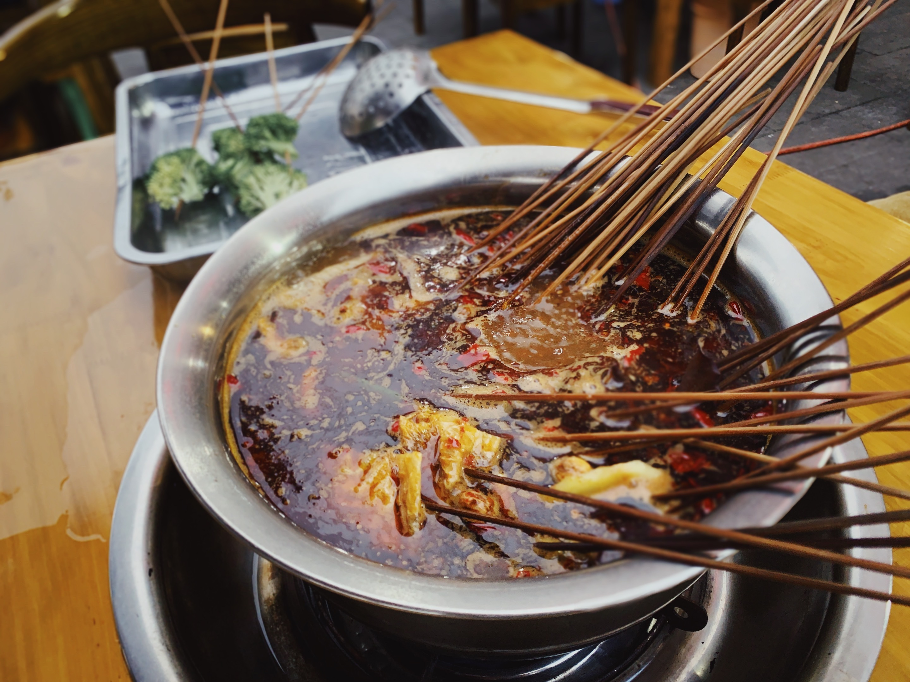
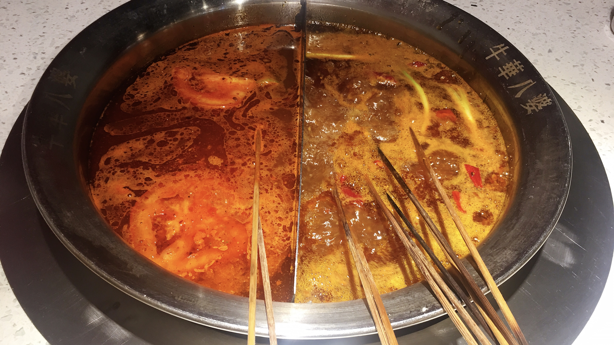
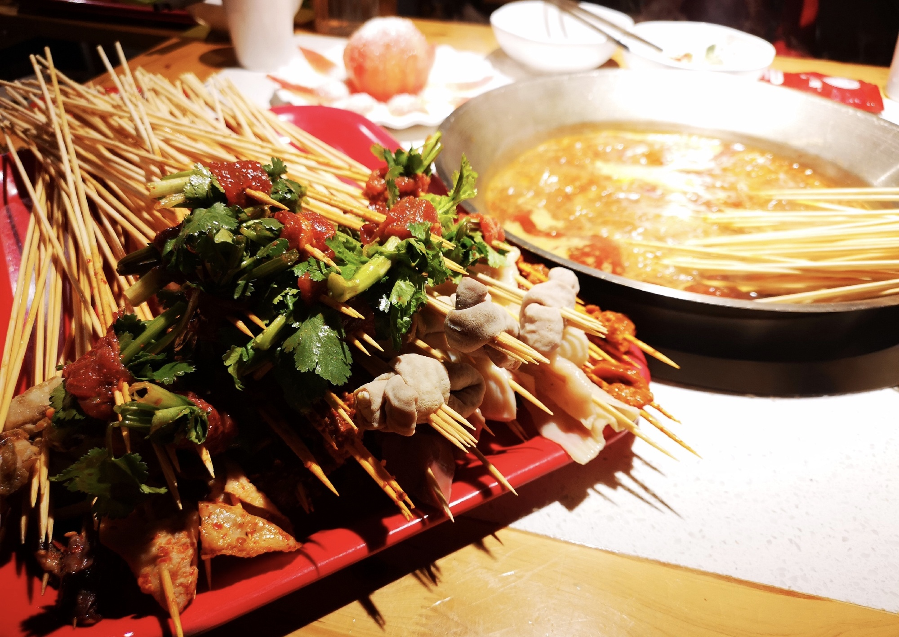

牛华麻辣烫是一道著名的传统小吃，以乐山一带为代表，乐山麻辣烫的佼佼者则集中在五通桥区。五通桥是四川鼎鼎有名的“食府”之一，西坝豆腐、麻辣烫和豆腐脑都产于此；该区的牛华镇，是有着最佳麻辣烫和豆腐脑之称的“双料食府天堂”。

说起五通桥这个弹丸之地，确是四川鼎鼎有名的“食府”之一，西坝豆腐、麻辣烫和豆腐脑都产于此；而该区的牛华镇，更是有着最佳麻辣烫和豆腐脑之称的“双料食府天堂”。

牛华麻辣烫一般分红白签：每只5毛左右的白签是素菜和较为便宜的荤菜，1元左右一只的红签大多是荤菜。 差不多100元，连带酒水，就能让五六个人体面地吃个畅快。冬天围着火炉吃的浑身暖烘烘，夏天就着冰啤酒清热败火。麻辣烫小店遍布城乡大街小巷，老少咸宜。

近年来，牛华麻辣烫不仅在四川小吃中奠定了其“蜀酋”地位，而且还走出四川，为全国人民带去了惬意的享受。